{kind=link}
{kind=link}
{kind=link}

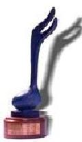
19th Annual W.C. Handy Blues Award (1998)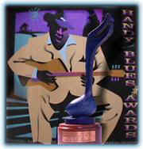
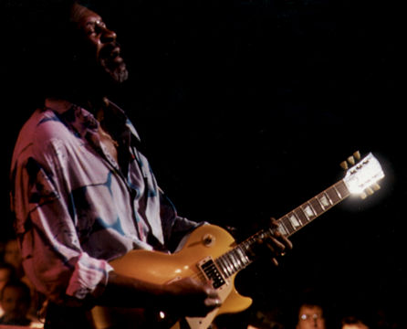
XIX церемония вручения премий им.В.К.Хэнди состоялась в четверг, 30 апреля 1998, в театре "Орфеум", Мемфис, Теннесси. Эта премия является наиболее пристижной в блюзовом мире.Премия вручается организацией "Блюз Фаундейшин", а лауреаты определяются голосованием среди читателей блюзовых журналов и слушателей блюзовых радиопрограмм.
Как и на двух предыдущих церемониях, в 1998 году вновь обладателем наибольшего числа номинаций и премий стал ЛЮТЕР ЭЛЛИСОН (5 премий: "Интетейнер", "Блюзбэнд", "Современный блюзмэн", "Гитарист", "Альбом современного блюза"). Кроме того, "Лучшей блюзовой песней года" названа песня из его альбома.
В командном зачете, как всегда, лидирует фирма
"ЭЛЛИГЕЙТОР":
3 премии и три номинации по альбомным категориям
плюс 9 премий и 9 номинаций, полученных артистами,
работающими с "Эллигейтором".
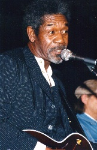
1.Blues Entertainer of the Year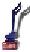
Luther Allison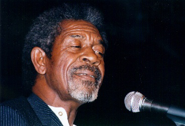
Luther Allison/James
Solberg Band
Joe Louis Walker & The Bosstalkers
Rod Piazza & the Mighty Flyers
Roomful of Blues
The Holmes Brothers
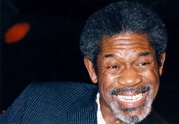
3.Contemporary Blues-Male Artist of the YearLuther Allison
Charlie Musselwhite
Rod Piazza
Joe Louis Walker
Smokey Wilson
Marcia Ball
Deborah Coleman
Debbie Davies
Sista Monica
Koko Taylor
Toni Lynn Washington
Little Milton
Mighty Sam McClain
Johnny Adams
Bobby Rush
Jonnie Taylor
Ruth Brown
Denise LaSalle
Ann Peebles
Irma Thomas
Lavelle White
Carey Bell
R. L. Burnside
David "Honeyboy" Edwards
Corey Harris
Snooky Pryor
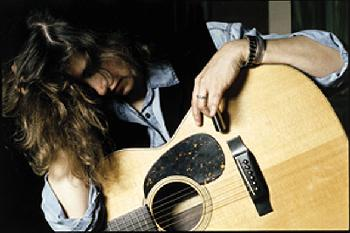
Rory Block
Tracy Nelson
Ann Rabson
Annie Raines
Shelia Wilcoxson
Keb Mo
Alvin Youngblood Hart
Corey Harris
Kelly Joe Phelps
Philadelphia Jerry Ricks
Johnny "Yard
Dog" Jones
Chico Banks
Chris Beard
Super Chikan
Andrew "Jr.Boy" Jones
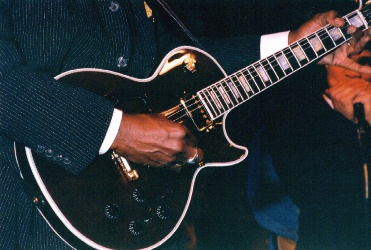
Luther Allison
Ronnie Earl
Anson Funderburgh
Big Jack Johnson
Duke Robillard
Joe Louis Walker
Rod Piazza
Carey Bell
James Cotton
Sam Myers
Charlie Musselwhite
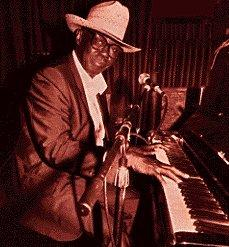
Pinetop Perkins
Marcia Ball
Charles Brown
Honey Piazza
Floyd Dixon
Johnnie Johnson
David Maxwell
Calvin "Fuzz" Jones
Sister Sarah Brown
Aaron Burton
Johnny B. Gayden
Willie Kent
Willie "Big Eyes" Smith
Ray "Killer" Allison
Jimi Bott
Sam Carr
Sam Lay
"Roomful of Blues" Horn
Section
Clarence "Gatemouth" Brown - violin
Kaz Kazanof - saxophone
Sonny Rhodes - lapsteel guitar
Eddie Shaw - saxophone
Luther Allison "Reckless"
(Alligator)
Long John Hunter "Swinging From The Rafters" (Alligator)
Rod Piazza & The Mighty Flyers "Tough & Tender" (Tone-Cool)
Joe Louis Walker "Great Guitars" (Verve)
Smokey Wilson "The Man From Mars" (Bullseye)
Ruth Brown "R + B = Ruth
Brown" (Bullseye)
Johnny Adams "One Foot in the Blues" (Rounder)
Solomon Burke "The Definition of Soul" (Pointblank)
King Ernest "King of Hearts" (Evidence)
Bobby Rush "Lovin' A Big Fat Woman" (Waldoxy)
Mighty Joe Young "Mighty Man" (Blind Pig)
The Holmes Brothers "Promised Land" (Rounder)
Carey Bell: Good Luck Man-Alligator
Corey Harris "Fish Ain't Bitin'" (Alligator)
Jellyroll Kings "Off Yonder Wall" (Fat Possum)
Snooky Pryor "Mind Your Own Business" (Antone's)
Ann Rabson "Music Makin' Mama" (Alligator)
Eddie King "Another Cow's
Dead" (Roesch) 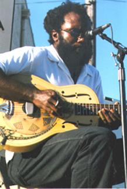
Jimmy Burns "Leavin' Here Walkin'" (Delmark)
King Ernest "King of Hearts" (Evidence)
Jelly Roll Kings "Off Yonder Wall" (Fat Possum)
Philadelphia Jerry Ricks "Deep In The Well" (Rooster)
Freddie Roulette "Back In Chicago" (Hi Horse)
Corey Harris "Fish Ain't
Bitin'" (Alligator)
Ann Rabson "Music Makin' Mama" (Alligator)
John Mooney "Dealin' With The Devil" (Ruf Records)
Kelly Joe Phelps "Roll Away The Stone" (Burnside)
Philadelphia Jerry Ricks "Deep In The Well" (Rooster)
Jimmy Rogers "The Complete
Chess Recordings" (MCA/Chess Records)
R.L. Burnside "Acoustic Stories" (MC Records)
James Harman "Extra Napkins" (Cannonball Records)
Jessie Mae Hemphill "Feelin' Good" (High Water)
Mississippi Fred McDowell "The First Recordings" (Rounder Records)
Jerry Lynn Williams: Living In The
House Of The Blues
Luther Allison "Reckless" (Alligator)
Eddie Clearwater: Don't Take My Blues
Eddie Clearwater "Mean Case Of The Blues" (Bullseye)
Jimmy Burns: Leavin' Here Walkin'
Jimmy Burns "Leavin' Here Walkin'"(Delmark)
Joe Louis Walker: Low Down Dirty Blues
Joe Louis Walker "Great Guitars" (Verve)
Smokey Wilson: The Man From Mars
Smokey Wilson "The Man From Mars" (Bullseye)
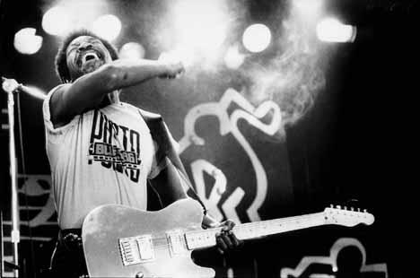